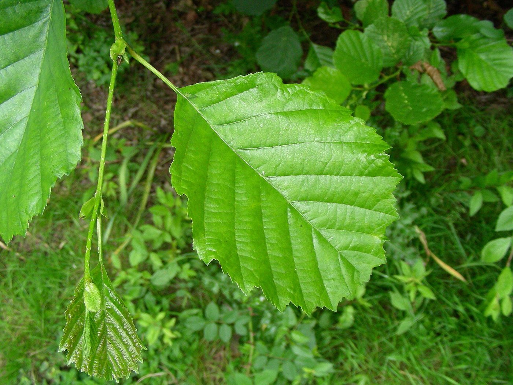
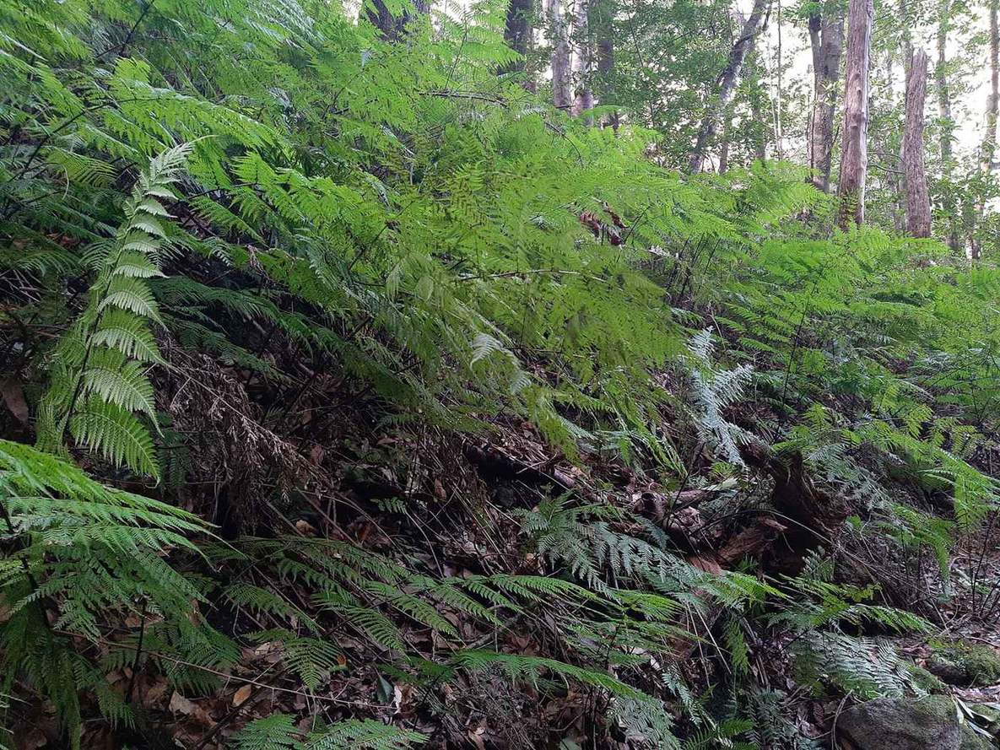
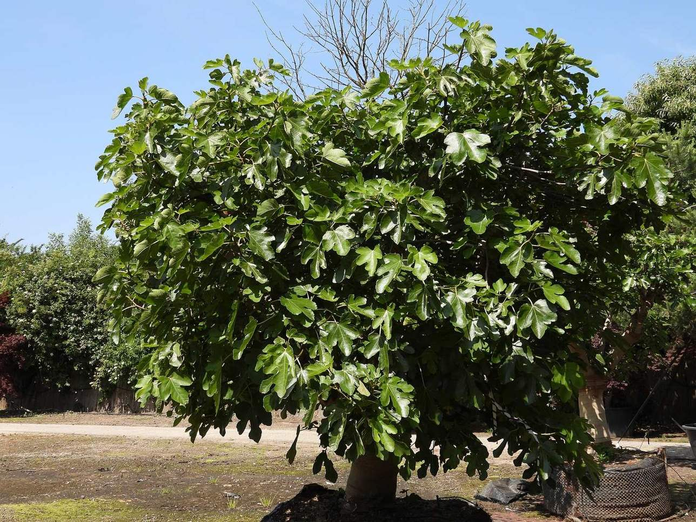
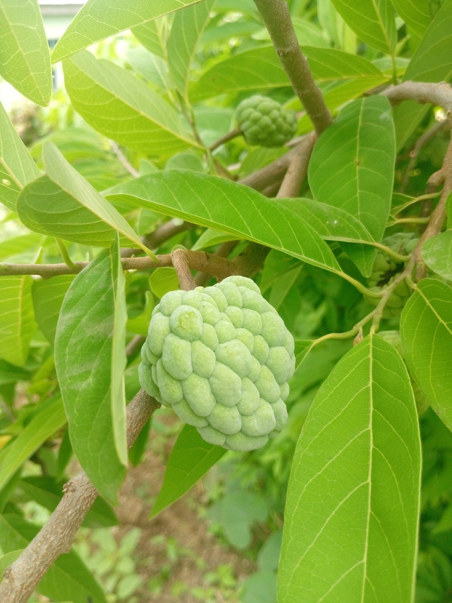
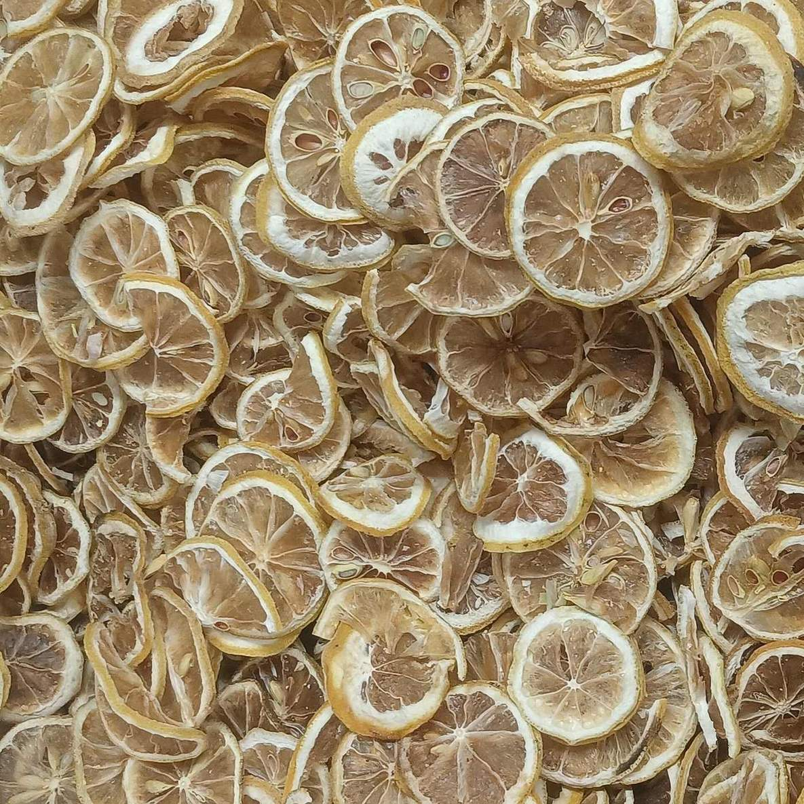

制作側の連想
手回し肉挽き器の部位を、配置図にしてみる
手回し肉挽き器の部位を図にしたもので、制作側の連想です。お店の理念・由来とは無関係で、実際の製品の仕様を示すものでもありません。六つの部位に番号をふり、上の図と並べています。
凡例
六つの部位
- 1ホッパー材料を入れる口の部分。上が広く下へすぼまった受け皿の形で、入れたものを筒の中へ導く。
- 2筒(本体)スクリューを収める円筒状の胴の部分で、全体の骨格になる。
- 3スクリュー筒の中で回り、入れたものを先へ送り出す太いらせん状の軸。
- 4刃(カッター)先端で回転し、板の穴に向けて切りそろえる金属の羽根。十字や星形のものがある。
- 5穴あき板(プレート)刃の外側に重なる円板で、小さな穴が並ぶ。穴の大きさで仕上がりの粗さが変わる。
- 6ハンドル手でまわすための腕と握りで、回す動きをスクリューの軸へ伝える。
写真(イメージ)
写真(イメージ)






写真はイメージです。お店のものではありません。
ご案内
お店のこと(確認できたものだけ)
| 所在地 | 〒834-0015 福岡県八女市本２０４２−２ |
|---|---|
| 電話 | 準備中 |
| 営業時間 | 準備中 |
| 定休日 | 準備中 |
| ご予約 | 準備中 |
| 駐車場 | 準備中 |
| SNS | Instagram @gosha_greenteacafe |